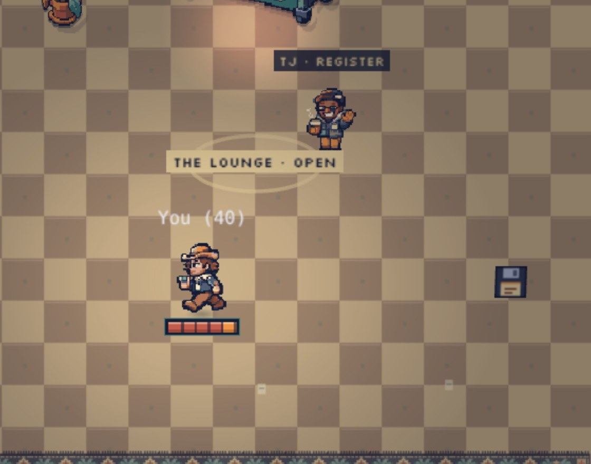
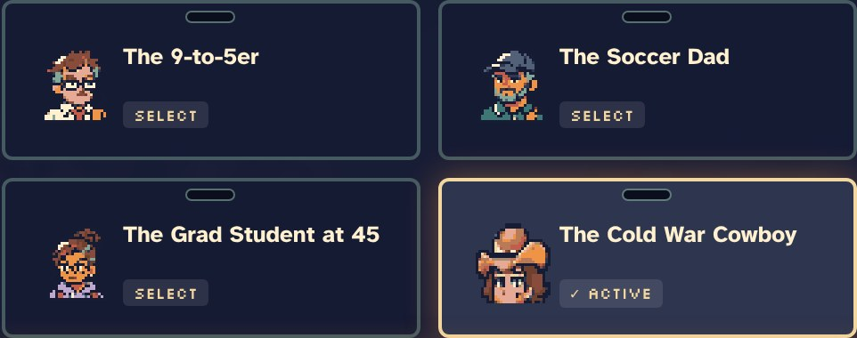
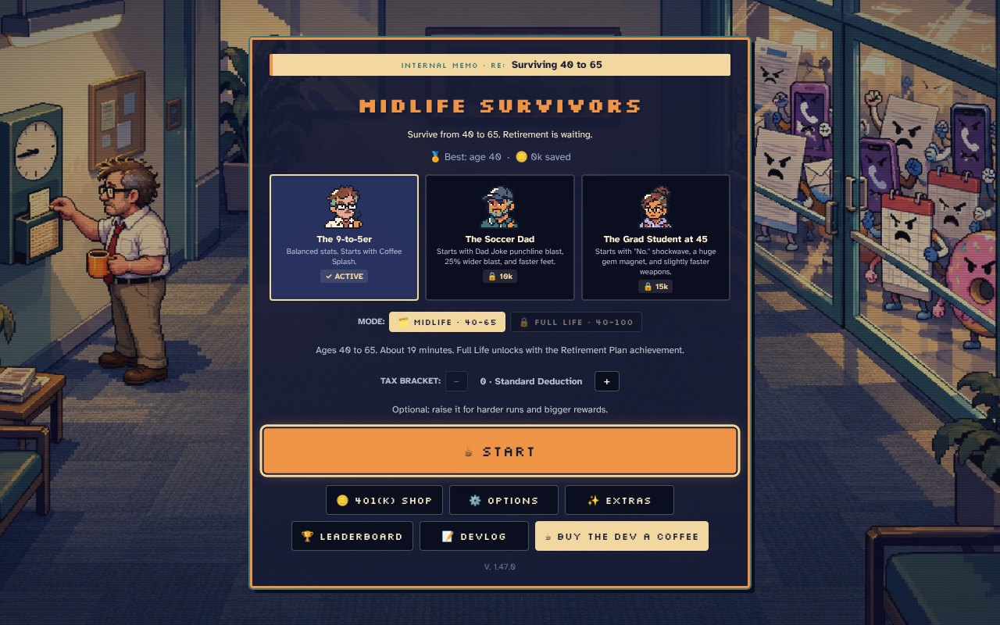
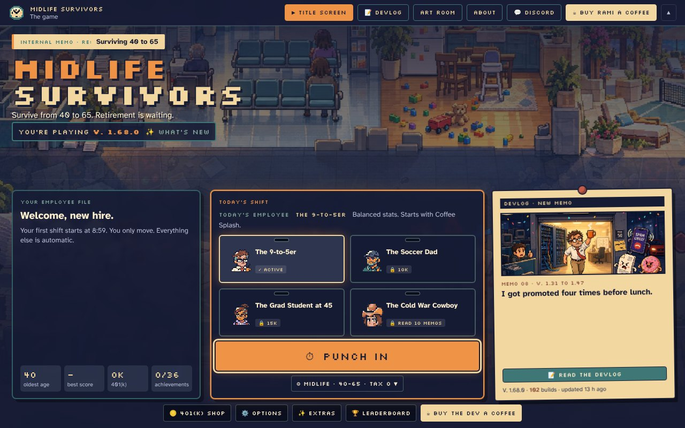
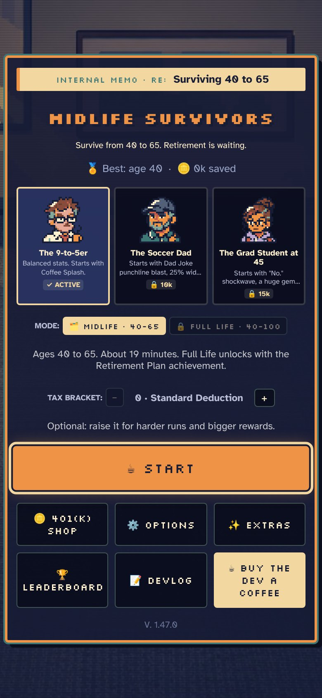
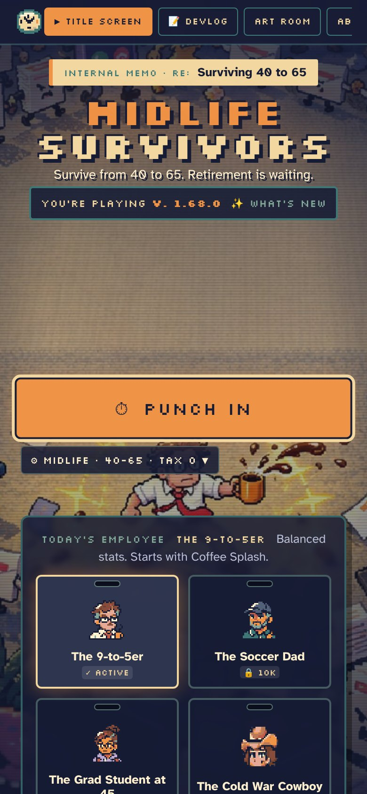
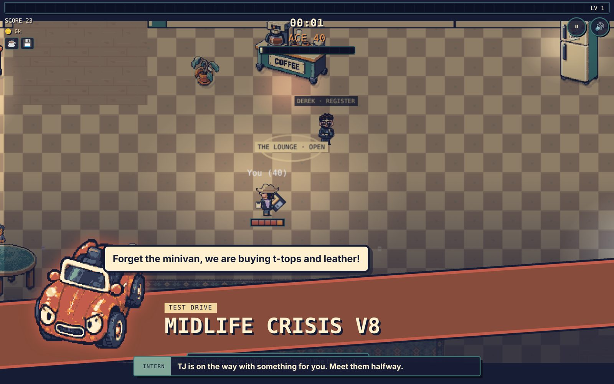

My friends work here now.
TJ and Derek are two of our student photographers at UCM. They jumped in early, played the game way more than they had to, and sent me bugs and ideas before I'd even finished my coffee. Today they became interns at the office. Ben, a friend since 2002, became a whole new hero.
It felt good to put my friends in the game, especially the ones who showed up first. Their feedback has a direct effect on how this thing is coming together, and now you can see them in it.
TJ found the force field
TJ texted me this morning: on his second run in the same browser, enemies stopped chasing him and seemed to bounce off "like a forcefield around my character." A hard refresh fixed it. He was right, and he'd basically found the cause himself.
The enemies follow a map that rebuilds a few times a second around wherever you are. It kept time with the run's clock. When you start a new run, that clock goes back to zero, but the map still remembered the old time. It thought it had just updated, so it froze around the spot where your last run ended, and the enemies followed arrows pointing somewhere you weren't.
// A new run restarts the run clock at 0. Without this, the map froze around
// the spot where you died and enemies steered away from you.
if (now < lastBuild) { lastBuild = -1e9; lastPc = -1; ready = false; }
One line. TJ also asked for a way to test the late game without playing 15 minutes to get there, so now there's a dev console with god mode, any upgrade and a jump to any age. Scores never post while it's on.1Add ?dev=1 to the game's address once, then tap the DEV MODE chip. ?dev=0 turns it off.
Coffee, snacks and a Lounge
TJ's other note was that runs end too fast because there aren't many ways to heal. So I asked Grok to work out the numbers, and now:
- Birthdays heal you. At 45, 50, 55, 60 and 65 the break room springs for cake.
- Elites drop a Desk Salad. It heals more than pizza, but it wilts in 14 seconds, so you have to go get it.
- The interns bring you things. Every minute or so, TJ or Derek walks over with a snack, a coffee or a boost. If a Bill bumps into them, they run.
- The Lounge opens after every promotion. One of them works the Break Room counter for about 35 seconds. Walk up, the game pauses, and you shop with your 401(k).
TJ and Derek came up with the Lounge in our group chat while I was asking them for lines. TJ sent me his. "What were the dinosaurs like?" and "For my Manager!!!" are both in the game now, and adding them made me smile.

The Coldwar Cowboy
Ben and I met in 2002, when I started at Kent as an undergrad. We both worked IT for the journalism school. So he's in the game as an IT guy with a soft spot for days gone by.
He throws a floppy disk that comes back to him. And once a run, when things get bad, he does the thing every IT person has said a thousand times: "Have you tried turning it off and on again?" The screen clears and he gets back up. You unlock him by reading 10 of these memos, which means you're about to be one memo closer.

One experience
The part I'm proudest of today is how it all feels together. The game, this devlog and the About page share one look now: the same fonts, the same memo strips, the same progress bar. Your stats follow you from the title screen to the devlog. The title tells you what version you're playing and what's new.


On a phone, it went from a wall of buttons to a poster you scroll.


And there are Spotlight cards. When a boss walks in, a coworker opens a new room, or you play a hero for the first time, a big card slides in with their sprite and one line, written by Gemini. That's the closest anything has come to the game I saw in my head before I started.

I want this to feel polished. Not a website for a game, or a game with a website, but one experience that makes the whole thing better.
How it gets made
I'm using Claude to coordinate everyone, AI and people. Grok does the math, Gemini writes the jokes, ChatGPT draws and builds rooms, and Muse tells me how my posts will land. My friends play it and tell me what's broken. Claude reads all of it and puts it together.
Also new today: the office got proper lighting, life after 50 now comes with surprises like "Rent Hike" and "Reading Glasses" for a couple of years at a time, and if you make it to 65 the office throws you a retirement party.